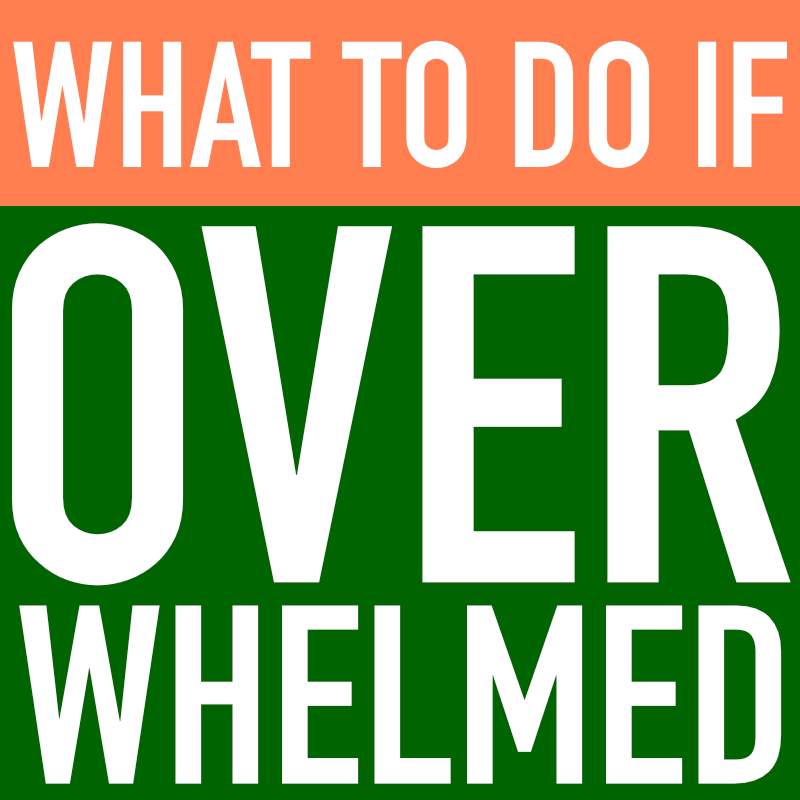

<ons-page id="page4">
  <ons-toolbar>
      <div class="left" style="background-color: #00a3e0; color: #fff">
  <ons-back-button></ons-back-button>
</div>
    <div class="center" style="background-color: #00a3e0; color: #fff">I am overwhelmed</div>
      
         <div class="right" style="background-color: #00a3e0; color: #fff"></div>
  </ons-toolbar>
    

       <ons-row style="text-align: center; background-color: #FFF">  
           
                            
           </ons-row>
    
</ons-page>
